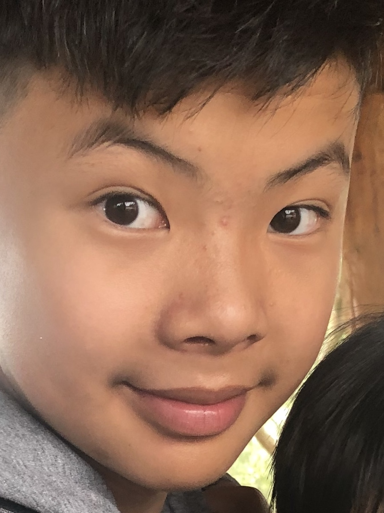

Career Summary
I am Nicolai Chen and I am 14 years old. I was born in the North Shore Area and anyone that has been to that place knows that everything is more expensive than other parts of Sydney. I lived in 3 different apartments/houses until I left to live in the South-West to which my dad worked. I started my high school memories in Hurlstone Agricultural High School and this is where I am right now.
Interests and skills
-
I've been playing the violin since I was half my current age
I've always enjoyed some sports but was never really good at it. I did represent my high school for some running events.
-
I've always wondered how the world worked. I liked chemistry and biology.
-
Because I'm a Taiwanese-background Australian, I can speak Mandarin and English. I am also currently studying Japanese.
Goals for this project
To be able to produce a website project
To present a proper documentation regarding towards the development of this website
To succeed in answering internet questions presented by the IST department at Hurlstone Agricultural High School
Goals in the future
I plan to do the HSC and go off to university. Hopefully, by that time, I woulld've chosen a career on which I really like.
I plan to show some of my skills and use it in the outside world
I hope to do well in my studies and at the same time, keep physically fit and distance myself from studies whenever I feel that I'm struggling